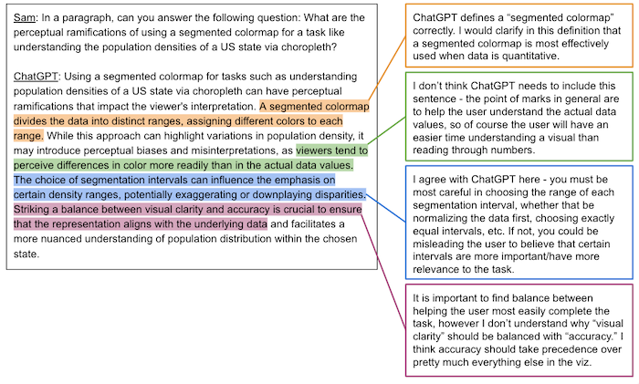
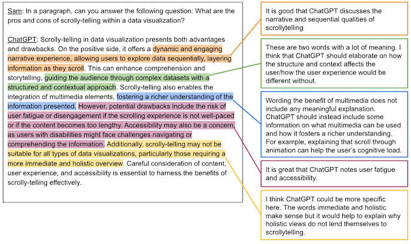
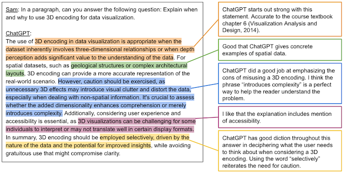

I chose this item to extend because I have always been interested in the use of ChatGPT, whether that be in ethical terms or otherwise. It has been so intriguing to me how much
everyone is using it recently, and I thought it sounded really neat to test it, as I always talk with friends, family, and professors about how its answers to your questions can't be taken as true.
From analyzing ChatGPTs responses, I learned that it can be surprisingly accurate. It did not miss the mark in any of the three questions I asked it. There were some details that it omitted that I might
have added, but that feels similar to if I were to read a classmate's response. We have different perspectives, so my classmate might include different main ideas that they gathered. Additionally,
there were a few sentences in the mix of the three responses that I could categorize as mostly "fluff."" They did not say much but they were on topic enough to fly under the radar if you were not closely
analyzing.
I think this small exercise will inform a lot of how I move forward using ChatGPT, for one because I do not see it ever going away in the school or work environment. Generally though, I think
it is super important to understand how ChatGPT has been trained and understand how it knows to provide you with the information it does. ChatGPT is being used for so much already, and it is necessary to do
research apart from using it. See my thoughts on DALLE and my art creations here!